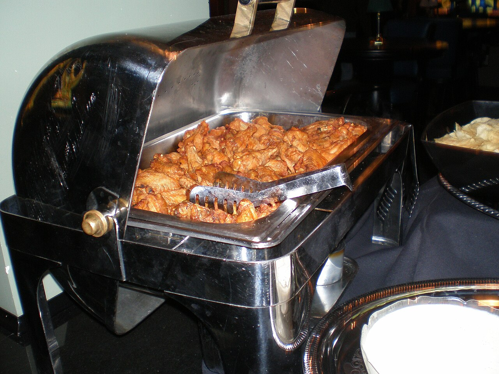

a long one · OHBoneless is not a wing
also: Berkheimer v. REKM · The boneless wing case

On 25 July 2024 the Supreme Court of Ohio held, 4 to 3, that a diner who swallowed a chicken bone from a boneless wing could not take his negligence claim to a jury, because he could reasonably have guarded against it. The case is Berkheimer v. REKM, L.L.C., 2024-Ohio-2787, 177 Ohio St.3d 431, docket 2023-0293. The majority wrote that calling the item a boneless wing described a cooking style. The dissent called that reasoning jabberwocky, twice. The argument the case dropped into is older than the case and older than the menu category: a boneless wing is breast meat, battered and fried, and the federal standard that governs what may be labelled a wing does not cover a restaurant menu at all.
The case, and what is in the record
Michael Berkheimer ate boneless wings at Wings on Brookwood in 2016. A bone roughly five centimetres long lodged in his oesophagus, tearing it; infection followed in his thoracic cavity, and with it fever and difficulty breathing. He sued the restaurant, its food supplier and a chicken farm in negligence and breach of warranty. The trial court granted summary judgment to the defendants; the Supreme Court of Ohio affirmed on 25 July 2024, 4 to 3.
Justice Joseph T. Deters wrote for the majority. Justice Michael P. Donnelly wrote the dissent. Ohio applies a reasonable-expectation test: whether a consumer could reasonably have expected the injurious substance in the food and so could have guarded against it.
Inference — one caution about this page. The court's own PDF of the opinion was unreachable from this project on 16 September 2026, as were the Justia and CourtListener copies; the quotations below are reproduced from reporting that printed them, and each is attributed to the outlet that printed it. Anyone relying on the exact wording should read the slip opinion.
What the majority said
On the bone itself, Holland & Knight quotes the majority: "Like the oyster shell at issue in Allen, it is apparent that the bone ingested by Berkheimer was so large relative to the size of the food item he was eating that, as a matter of law, he reasonably could have guarded against it."
On the word on the menu, the same passage is quoted by Holland & Knight and by Reason's Volokh Conspiracy: "it is common sense that that label was merely a description of the cooking style."
The holding is about tort liability under Ohio's reasonable-expectation test. It is not a ruling about labelling, about advertising, or about what a restaurant may print.
What the dissent said
Justice Donnelly's dissent is quoted by Reason's Volokh Conspiracy: "The result in this case is another nail in the coffin of the American jury system"; "More utter jabberwocky"; and, on the majority's cooking-style reading, "Jabberwocky. There is, of course, no authority for this assertion, because no sensible person has ever" — the post's excerpt breaks there.
On what a diner understands, he is quoted: "When they read the word 'boneless,' they think that it means 'without bones,' as do all sensible people." CBS News prints a further line: "Does anyone really believe that the parents in this country who feed their young children boneless wings...expect bones to be in the chicken?"
The dissent's complaint is procedural as much as lexical: that the question of what a diner could reasonably expect is a jury's to answer, and the majority took it away.
What a boneless wing is made of
Breast meat. Russ Whitman, a poultry analyst at Urner Barry, told The Counter in February 2018 how it is done: "they take a piece of breast meat, and they essentially strip it down, cut it into five three-inch long pieces, and coat it with buffalo sauce, and throw it in a fryer." Asked whether it is a wing, he said: "I mean, no, it's not a wing at all. It's white meat, it's breast meat. Is it fair? I don't know what the rules are. It's misleading."
The process is the chicken nugget's process, which Robert C. Baker worked out at Cornell in the 1950s and published unpatented: coat the meat so it holds together, then batter it so the coating survives frying and freezing. A boneless wing is that, cut larger and sauced.
Why the category exists
Wings got expensive and some diners wanted a neater thing to eat. Restaurants answered with a menu line called boneless wings — skinless boneless breast, floured and spiced, fried or baked, and sauced the same way the bone-in ones are. Sometimes it was sold under the spelling wyngz.
By the National Chicken Council's figures as reported by The Counter in 2018, traditional wings still accounted for 64% of all wings served in restaurants, with boneless orders falling that year. Datassential has since projected boneless growing on menus while bone-in stays flat. Inference — a category that is 36% of a market and growing is not a fringe; it is half the argument's reason for existing.
Wyngz
The federal standard is narrow. 9 CFR 381.170(b)(7): "'Wings' shall include the entire wing with all muscle and skin tissue intact, except that the wingtip may be removed." A poultry product that is not that may not be labelled a wing.
So when Nestlé wanted to put boneless chicken pieces in a DiGiorno frozen pizza box in 2011, USDA's Food Safety and Inspection Service offered a spelling instead. Consumer Reports, writing on 3 February 2011, reported the terms: "The FSIS allows the use of the term 'wyngz' to denote a product that is in the shape of a wing or a bite-size appetizer type product under the following conditions" — among them that the poultry is white chicken and that the product contains no wing meat — and that the agency stipulates "no other misspellings are permitted." Stephen Colbert put the spelling on television, which is how most people heard of it.
The rule reaches a package. It does not reach a menu: FSIS and FDA labelling standards govern what is printed on a label, and a restaurant's menu board is not one. Inference — that gap is the whole reason the question reached a court as a tort claim rather than a labelling complaint.
The older argument
Tradition holds — people were saying a boneless wing is not a wing long before 2024 and long before wyngz. The sentence gets said across a bar counter and in the comments under every wing post, and it takes two forms that are worth keeping apart: a claim about anatomy, which is simply correct — breast is not wing — and a claim about worth, which is a preference. The court decided neither.
What the decision does and does not settle
It settles that in Ohio, a plaintiff in Berkheimer's position does not reach a jury on those facts. Inference — it does not define the word boneless, it does not bind any other state, it does not touch federal labelling, and it does not stop a restaurant calling the item whatever it likes. What it did do is hand both sides of a bar argument a court citation, which is why it is quoted far more often than it is read.
The particulars
| kind | essay |
|---|---|
| state | OH |
| region | The United States, The Ohio Valley |
| confidence | medium · needs verification · updated 2026-09-16 |
Who it runs with
Who talks about it
Where we got it
- Berkheimer v. REKM, L.L.C. — case record (docket 2023-0293, 2024-Ohio-2787, 177 Ohio St.3d 431, filed 2024-07-25) · link
- Should Consumers Expect to Find Bones in "Boneless Wings"? — Jonathan H. Adler · link
- Diners who order boneless chicken wings can't expect them to really be boneless, court rules · link
- Court Decision Concerning "Boneless Chicken Wings" Ignites Political Firestorm in Ohio · link
- Boneless chicken wings: It's not a lie if you believe it — Sam Bloch · link
- 9 CFR 381.170 — Standards for kinds and classes, and for cuts of raw poultry · link
- Stephen Colbert's right: wyngz rhetoric · link
- 'Boneless wings' or 'saucy nugs': Viral video provides lesson on food labeling laws · link
- Chicken nugget · link
- Buffalo wing · link
Where it came from: Cited a source we name · Harvested pulled from an open dataset · Tradition what the tradition says, hedged · Inference this project's reasoning · Field somebody stood there. This record as JSON.